Страница программы: все типовые блоки — как они выглядят сейчас
Снимки с programms.edu.urfu.ru и masters.urfu.ru, 19.11.2026. Берётся верх блока; клик по снимку открывает его отдельно. Доли — из описи 530 программ.
Шапка
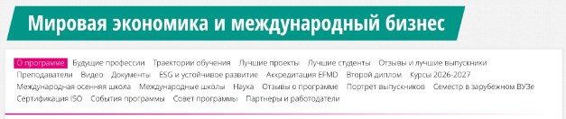
У всех. В меню от 3 до 23 пунктов: стандартные вкладки и свои страницы вперемешку, без группировки.
10071 · бакалавриат, 23 пункта ↗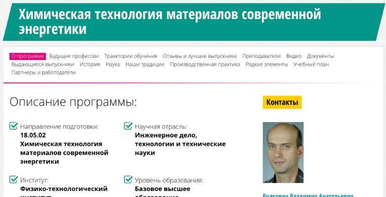
Базовое высшее: «История», «Наука», «Наши традиции», «Редкие элементы» стоят в одном ряду с «Документами».
10930 · базовое высшее ↗«О программе»
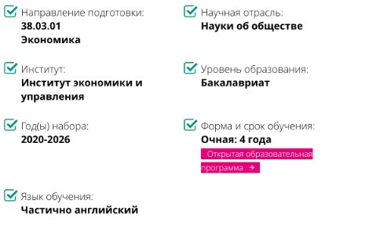
У всех: направление, научная отрасль, институт, уровень, годы набора, форма и срок, язык. Кнопка «Открытая образовательная программа» ведёт в админку — ошибка сайта.
10071 ↗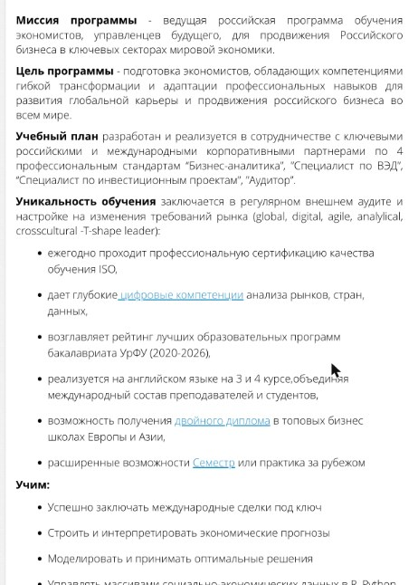
У всех, свободный текст: медиана 2,7–3,7 тыс. знаков, у аспирантуры — 324. Списки — у 26–53 программ на уровень, картинки — у 18 магистерских и 12 бакалаврских.
10071 ↗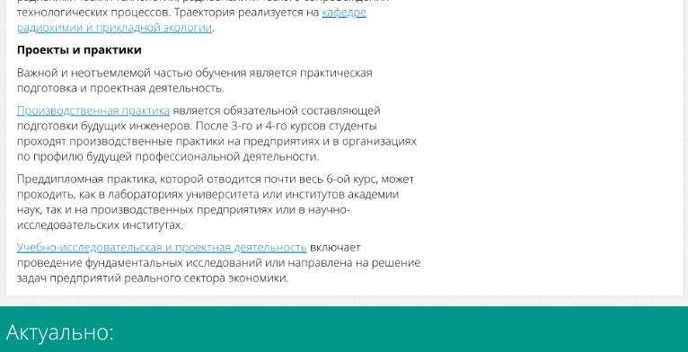
Внутри описания — свои подразделы («Проекты и практики») и ссылки на свои страницы.
10930 · базовое высшее ↗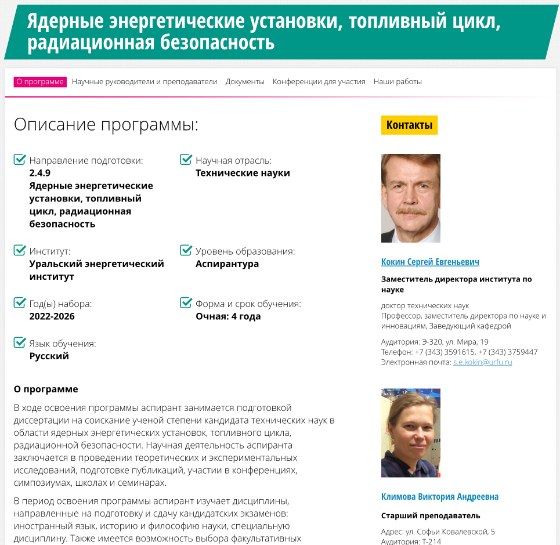
Тот же паспорт, короткое описание, в контактах — замдиректора института по науке.
10466 · аспирантура ↗Контакты
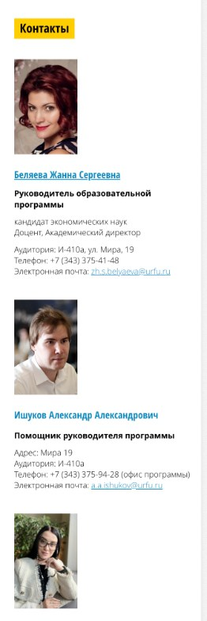
У всех. Руководитель программы, у аспирантуры — замдиректора по науке; ниже помощники. Фото, должность, степень, аудитория, телефон, почта.
10071 ↗«Актуально» — поступление
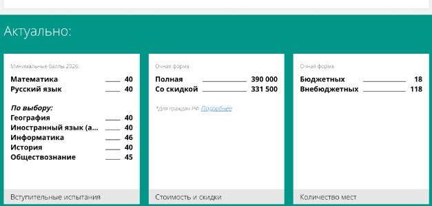
Три карточки: минимальные баллы (обязательные + по выбору), полная цена и со скидкой, бюджетные и внебюджетные места.
10071 · бакалавриат ↗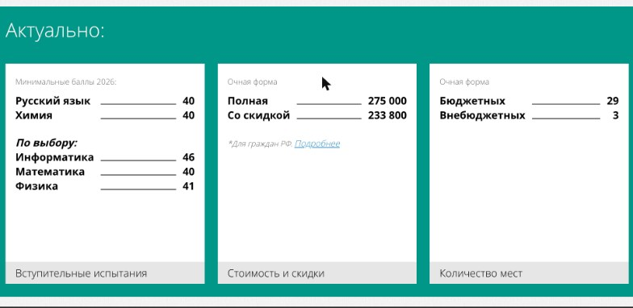
То же, что у бакалавриата: баллы — у 100 % программ, места — у 100 %, цена с суммой — у 78 %.
10930 · базовое высшее ↗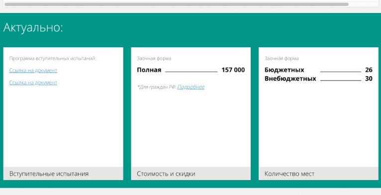
Вместо баллов — «Программа вступительных испытаний» двумя ссылками «Ссылка на документ». Так же у СпВО.
9816 · магистратура ↗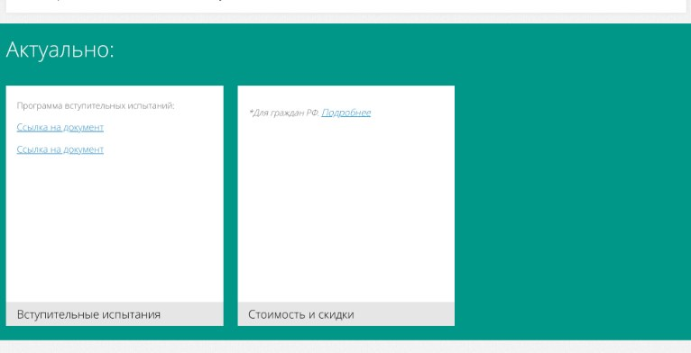
Две карточки: испытания и пустая «Стоимость и скидки» — только сноска и ссылка «Подробнее».
10466 · аспирантура ↗События
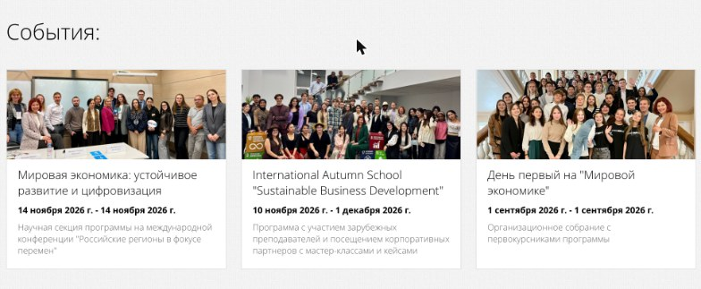
Карточки: фото, название, даты, описание. Бакалавриат — 32 %, магистратура — 29 %, базовое высшее — 12 %, СпВО — 11 %, аспирантура — 1 %.
10071 ↗Вкладки
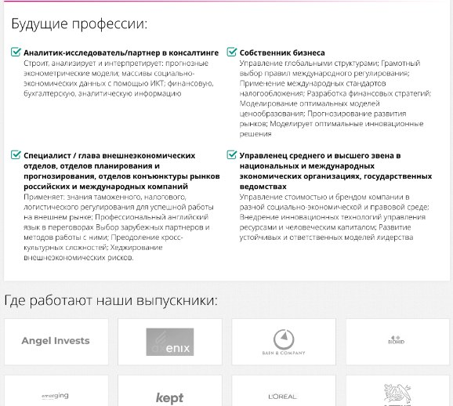
Профессия → чем занимается; ниже логотипы «Где работают наши выпускники». Магистратура 89 %, бакалавриат 76 %, СпВО 69 %, базовое высшее 46 %, у аспирантуры нет.
10071 ↗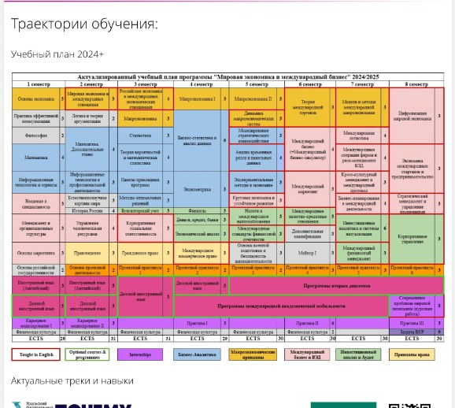
Учебный план картинкой, «Актуальные треки и навыки», «Образовательные возможности». 13–24 % программ, у аспирантуры нет.
10071 ↗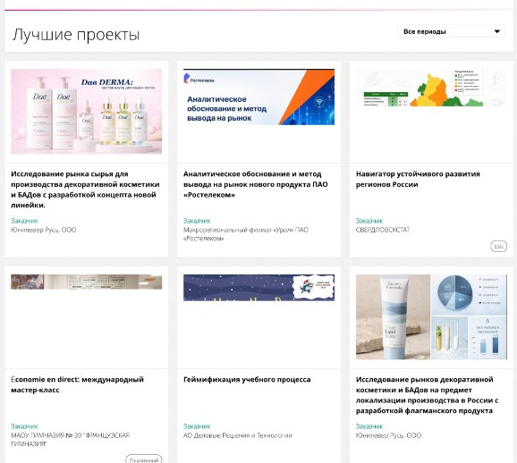
Карточки: обложка, название, заказчик, ярлык (ESG, «Социальный»); фильтр «Все периоды». Бакалавриат 70 %, магистратура 67 %, СпВО 36 %.
10071 ↗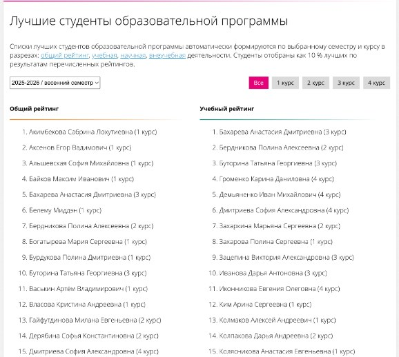
Автоматические рейтинги — общий, учебный, научный, внеучебный; семестр и курс. Магистратура 95 %, бакалавриат 95 %, у базового высшего, СпВО и аспирантуры нет.
10071 ↗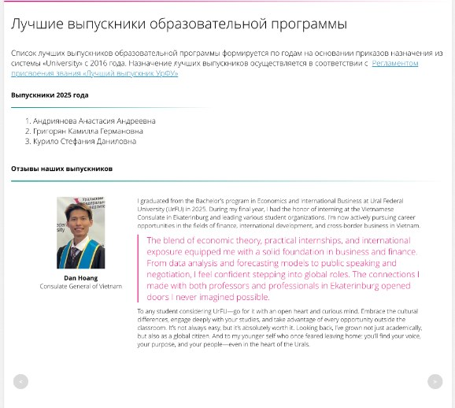
Список лучших выпускников по годам и отзывы каруселью. Магистратура 70 %, бакалавриат 65 %, СпВО 29 %.
10071 ↗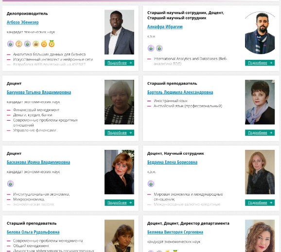
Карточки: должность, ФИО, степень, значки наград, дисциплины, «Подробнее». Бакалавриат 93 %, магистратура 89 %, СпВО 74 %.
10071 · 56 карточек ↗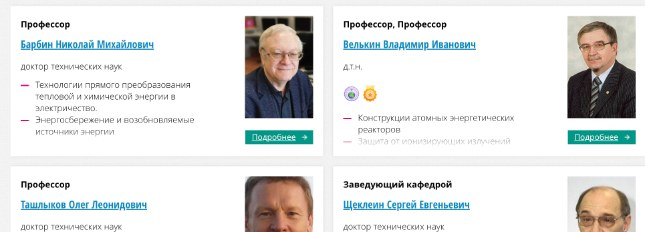
Те же карточки под другим названием. У 53 % программ аспирантуры.
10466 · аспирантура ↗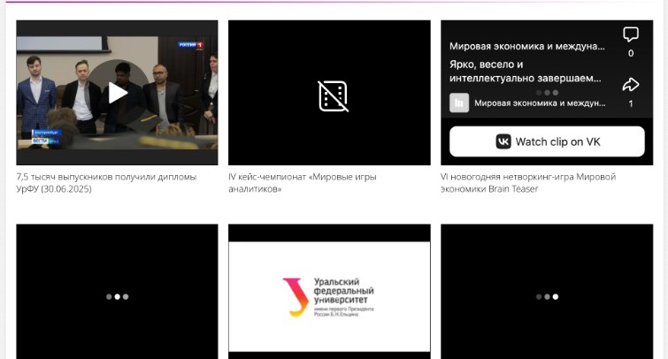
Сетка встроенных видео (VK, YouTube) с подписью. Часть роликов не грузится. Бакалавриат 55 %, магистратура 44 %.
10071 · 30 видео ↗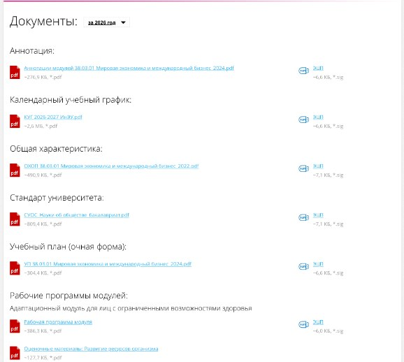
У всех. Группы по типу документа, рядом подпись ЭЦП; переключатель «за 2026 год».
10071 ↗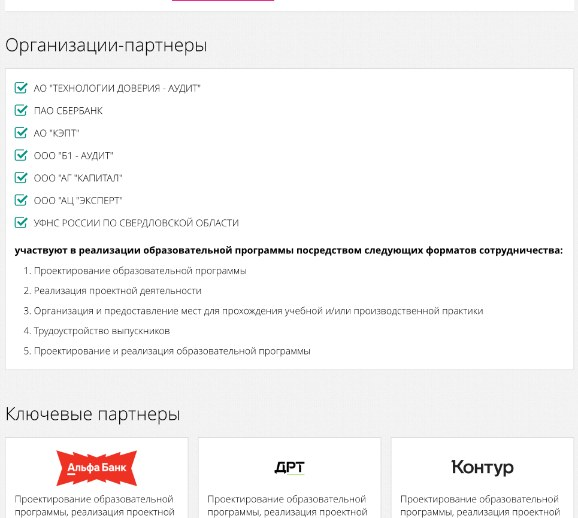
Список организаций, форматы сотрудничества, «Ключевые партнеры» с логотипами. Бакалавриат 74 %, магистратура 68 %, СпВО 58 %.
10071 ↗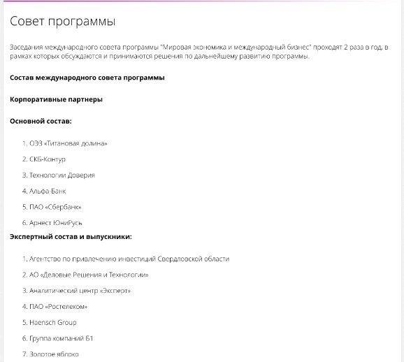
Свободный текст из редактора. 494 страницы у 167 программ, 310 разных названий.
10071 · «Совет программы» ↗masters.urfu.ru
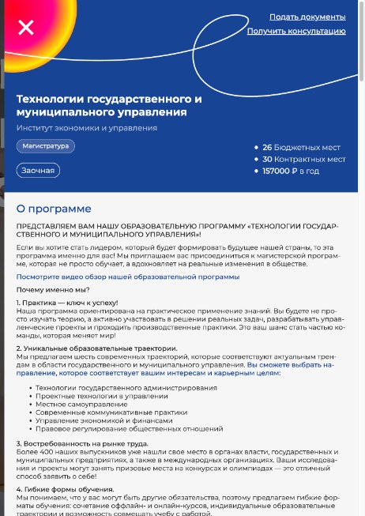
Боковая панель поверх лендинга: название, институт, ярлыки уровня и формы, места, цена за год, «Подать документы», «Получить консультацию».
9816 · магистратура ↗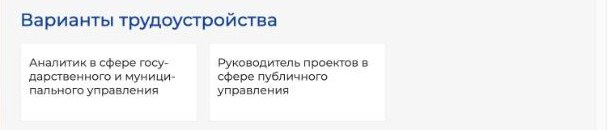
Карточки должностей.
9816 ↗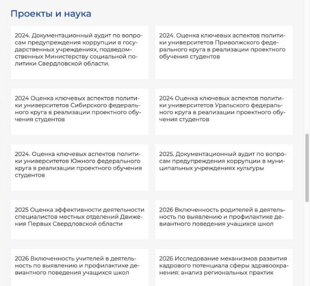
Карточки-названия проектов, без картинок.
9816 ↗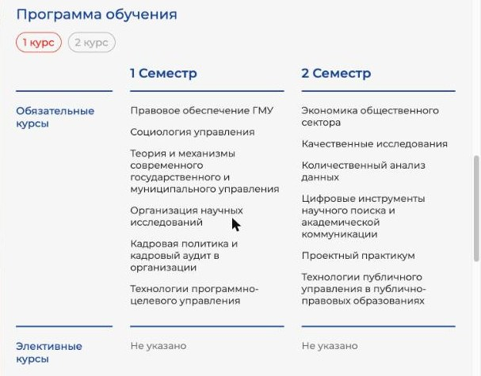
По курсам и семестрам: обязательные и элективные курсы.
9816 ↗